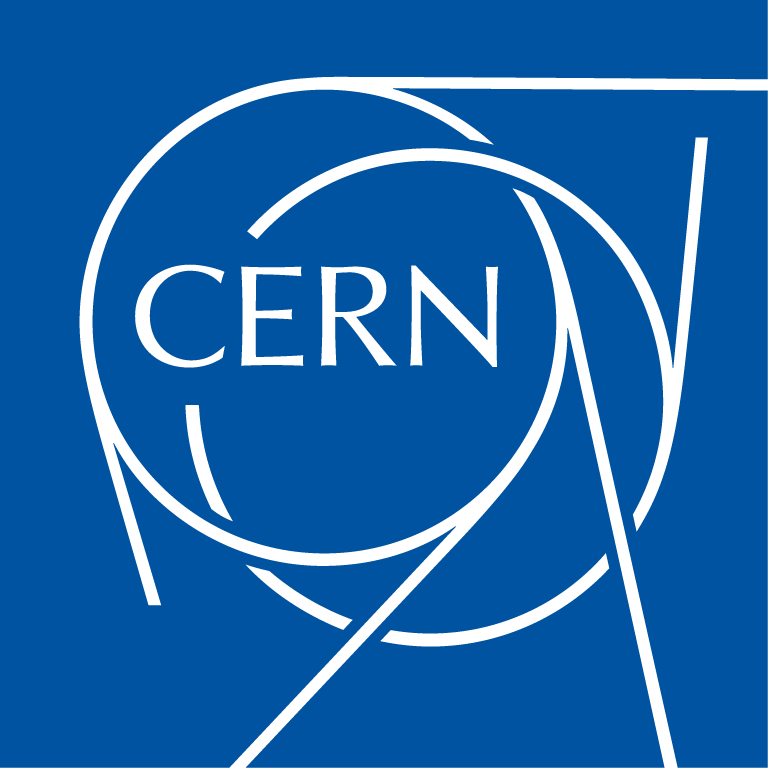

Open Source Event Management System
CERN
- Based in Geneva 🇨🇭
- 22 member states
- 3500 employees + 15000 associates
- Bilingual 🇬🇧🇫🇷
Open Source
- Data Analysis: ROOT
- Simulation: Geant4, Fluka
- Filesystems: CERN VM-FS, EOS
- Electronic Design: KiCad
- Content Management: Invenio, Indico
- Event management system
- Digital repository
- Small meetings 🠒 Big conferences
- Started in 2004
@CERN: > 500.000 events